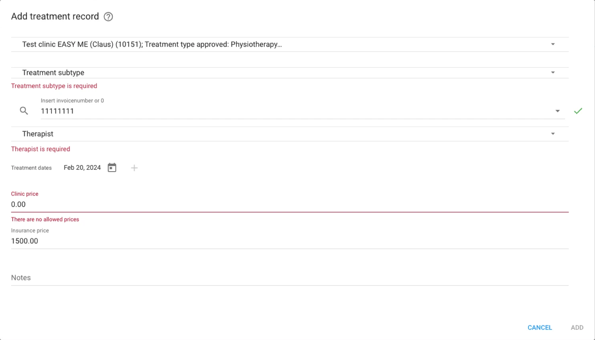
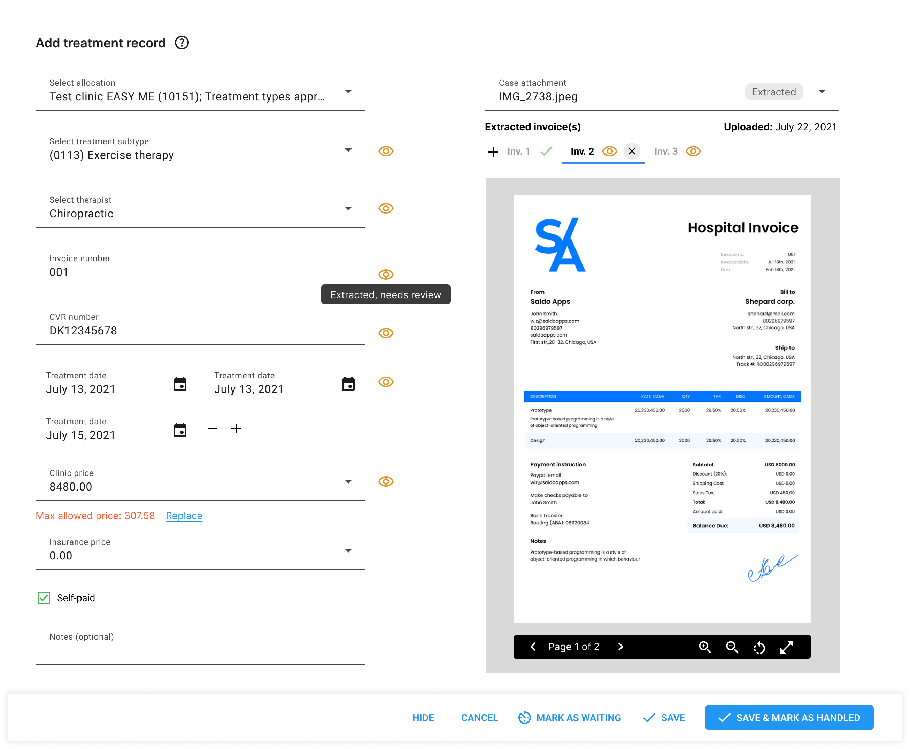

Case study 01 · Nordic Netcare
From retyping invoices to checking them
Patients upload clinic invoices to get reimbursed, and case workers used to retype every one by hand. I led an AI invoice reader with a human review step, and we built it ourselves for a fraction of what document-processing vendors charged.
- Problem
- Case workers retyped every patient-uploaded invoice by hand.
- Decision
- After vendor demos, build the extraction in-house on an OpenAI model, with a side-by-side review step for every invoice.
- Result
- Almost 20 times cheaper per document than the vendor quotes (tested on 100+ invoices); review about 3 times faster (informal estimate).
01The problem
Patients get an invoice from the clinic, usually a PDF or a photo, sometimes a hand-written receipt. They upload it in the app, as a file or with the camera. Nordic Netcare reimburses it if the clinic’s credentials are on it and the patient’s insurance plan covers the treatment.
On the other side, every upload landed in a list in the practice management system. A case worker opened it and created the treatment records under the patient’s case by hand, retyping the clinic, treatment, dates and prices. I sat with case workers while they did it. It was slow, it was easy to get wrong, and it took time away from the work that mattered more: calls with patients.
02What I chose to build, and what I cut
The request came from the co-CEO. I started by looking at what we could buy: I scheduled demos with document-processing vendors that specialise in extracting invoice data.
Two things came out of the demos. The first was a design idea. The better vendors showed the extracted data side by side with the source document. With or without AI, a case worker would still have to check every extraction, so that check had to be fast. I made mockups of how the review should work, what the AI would extract, and how a case worker could confirm or correct it.
The second was the price, and what was behind it. The vendors were running AI models for the extraction themselves. Three of them formally quoted about 20 cents per document on average. I tested OpenAI models directly on more than 100 sample invoices, and the token cost per document was almost 20 times lower. Building the integration ourselves also meant one less vendor contract and SLA to manage.
Invoices carry personal and health details. We used OpenAI’s API under a data processing agreement, with zero data retention, and management signed off on the setup before it went live.
Built
- Extraction in-house, directly on an OpenAI model.
- PDFs and image files, including hand-written receipts when legible and carrying the clinic’s credentials.
- A review screen with the source document beside the extracted fields. Every field stays editable.
Cut
- A document-processing vendor: about 20 times the cost per document, and another contract and SLA.
- Auto-approval. Company policy was that a person confirms every invoice, to catch AI hallucinations, so every invoice still goes to a case worker.
- A confidence score. I proposed running the extraction several times and lowering confidence where the results disagreed. We dropped it: a score would not have changed the workflow, and priorities were moving to other projects.
- Highlighting where on the invoice each value came from. With a person checking every invoice, further speed-ups had diminishing returns next to the jump from typing to checking.
03The design
The practice management system is an internal tool, so the design work here went into speed and clarity for case workers (fewer clicks, clearer controls), not visual polish.
Before, the case worker opened the uploaded file in another browser tab, searched it for each required value and typed it into an empty form. The browser could not zoom, rotate or pan the file, so a photo taken upside down or at an angle was hard to read.
Before

After, the invoice sits on the right and the form on the left arrives already filled in. Each field the AI filled is marked “Extracted, needs review”. The case worker’s job changes from typing to checking: compare, correct if needed, save.
After

Details that make checking fast
- One upload, several invoices. Patients often photograph more than one invoice at once. Each one the AI finds gets its own tab, marked done once it is saved.
- A viewer built for uploads and photos. Zoom, rotate and page through the document in place, so an upside-down or skewed photo no longer means squinting at another tab.
- The insurance rules are checked for the case worker. If an extracted price is above what the agreement allows, the form says so and offers to replace it with the maximum allowed price.
- Nothing is final until a person saves it. Every field is editable, and an invoice can be parked with “Mark as waiting” when something has to be clarified with the patient or the clinic.
04The result
Invoices arrive in the hundreds every day. Extracting each one is almost 20 times cheaper than the three vendor quotes of roughly 20 cents per document, tested on more than 100 sample invoices. Reviewing and approving an invoice became about 3 times faster. That second figure is an informal estimate from case worker feedback and my own observation, not timed.
When the invoice is in an accepted format and readable, the AI extracts the required fields correctly and the case worker only reviews and approves. The accounting department confirmed that invoice data was correct more often than with manual entry.
Most failed extractions came from poor photos or the wrong kind of file, a problem that starts before the AI sees the document. A quality check at upload was in the backlog but did not make it ahead of other goals.
What I would measure now: review time per invoice, the share of extractions saved without edits, and the share of uploads that fail.